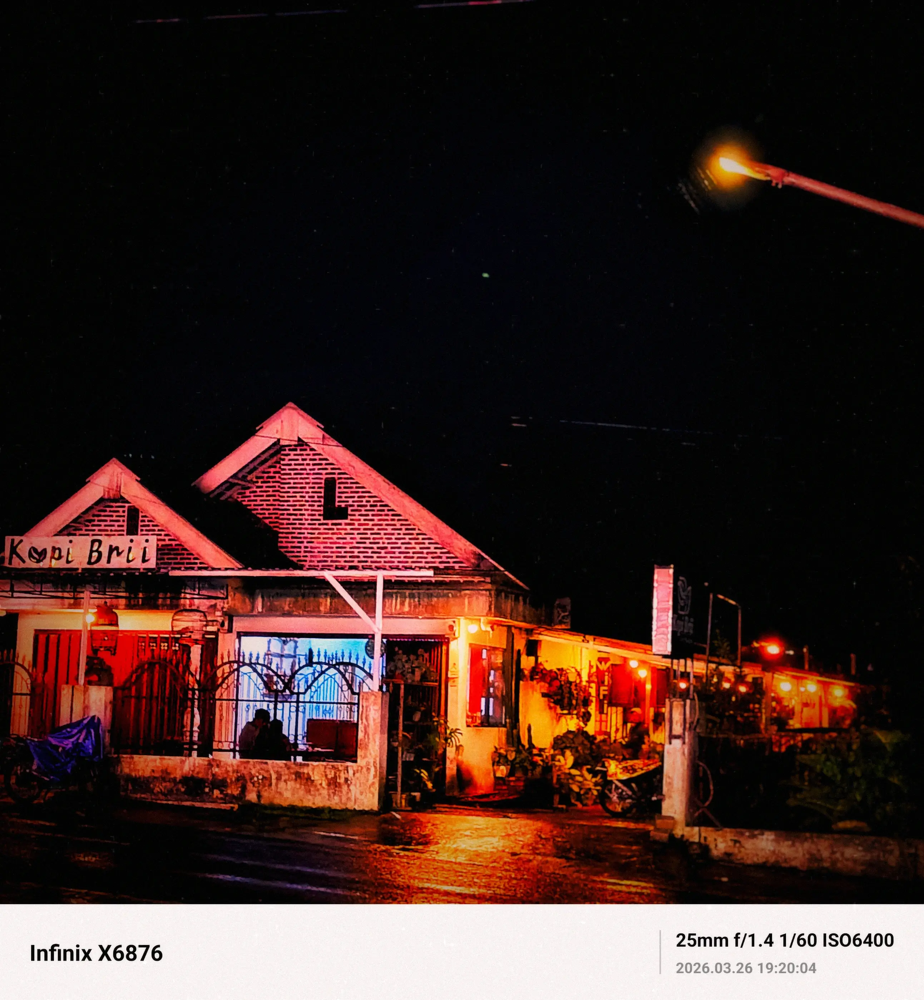
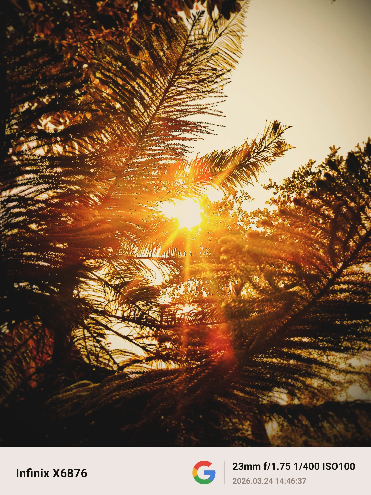
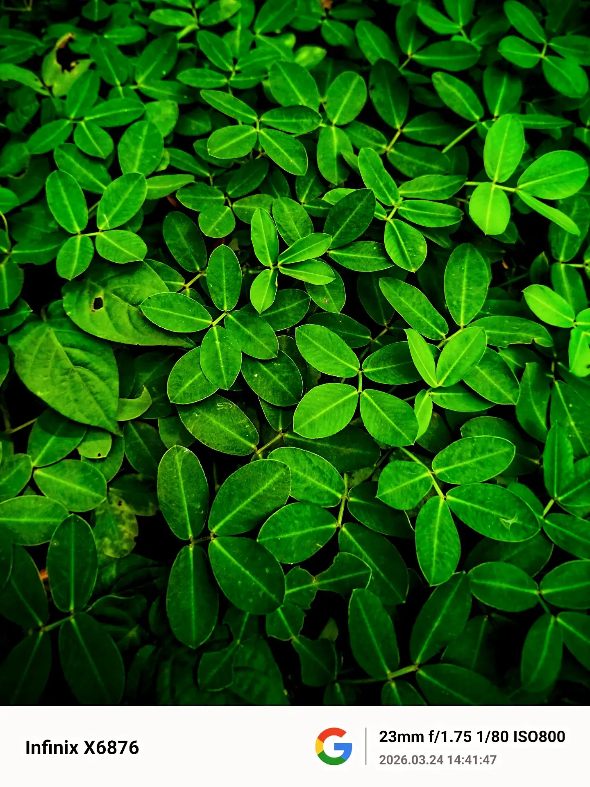
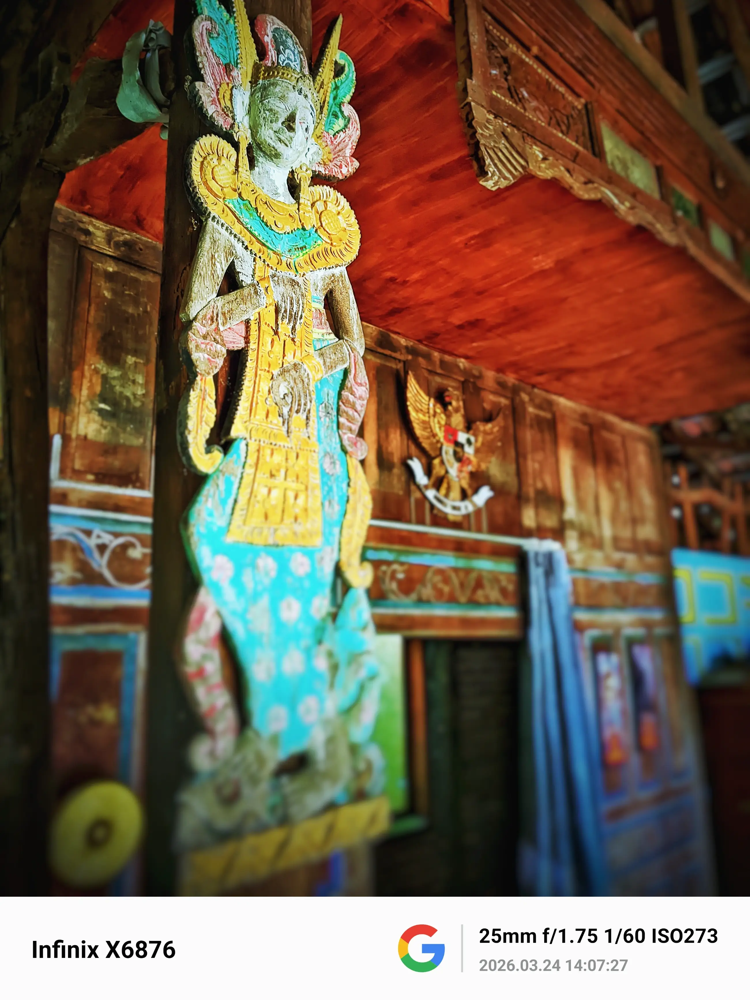
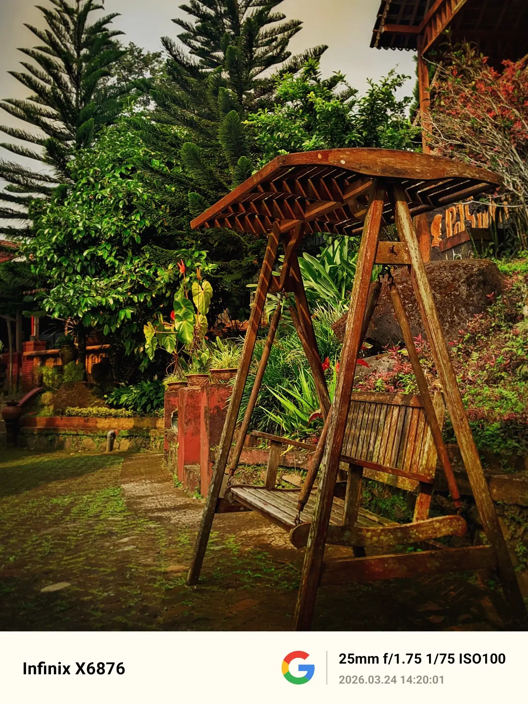

"Berbicara lewat cahaya, waktu, dan sekilas tangkapan rasa juga ribuan kode dan dinamika manusia"

Tahukah kamu? Bagaimana rasa bimbang itu menyerang dan kembali? Suatu saat ada hal yang akan kuceritakan dibalik kafe ini. Suatu saat mungkin juga cahaya cahaya itu akan redup dan menciptakan bimbang yang kembali menyerang. Dua orang di dalam cafe itu mungkin tidak akan pernah tahu bahwa mereka adalah objek dari kontemplasiku malam ini. Tapi bagiku, mereka adalah bukti bahwa cahaya dan kehangatan itu nyata, dan aku, dengan caraku sendiri, sedang berjalan menuju ke sana lewat lensa, cerita dan ribuan kode yang semoga dapat mengubah dunia. #ceritalensa #fotografer #rasadankarsa
Infinix X6876 | f/1.75 | 1/25s | ISO 2287

Aku melihatnya dari jauh— bukan hanya karena ia bersinar, tapi karena aku tahu, ia berani untuk memulai. Cahaya itu indah—terlalu indah, hingga kadang aku merasa kecil di hadapannya. Seolah semua orang bisa mencapainya, kecuali aku yang masih tertahan di antara rimbun keraguan. Dan di saat itu, aku bertanya dalam diam… mengapa aku masih tertahan di antara rimbun keraguan? Aku sering memberi rasa pada sebuah tangkapan gambar, tetapi ironinya aku sendiri kehilangan rasa itu. Dimana aku sebenarnya? Sampai kapan aku harus terus kehilangan rasa yang sama? #cahayafoto #matahari #rasadanmakna #fotografi
Infinix X6876 | f/2.2 | 1/500s | ISO 100

Alam telah membawa cerita, dan aku sebatas hanya mendengarkan. #naturephoto #photography #alam
Infinix x6876 |f/2.5 | 1/80s | ISO 350

Wajahnya tak berbicara, namun sikapnya menyimpan kisah panjang tentang bertahan. Tentang waktu yang terus mengikis, namun tak pernah benar-benar mampu meruntuhkan makna. #budayaindonesia #heritage #fotografi
Infinix X6876 | f/2.0 | 1/100s | ISO500

Ayunan yang sudah lama berhenti. Ia tidak lagi mengejar ketinggian, tidak lagi menghibur tawa. Kini, ia hanya diam di tengah rimbunnya alam, menjadi tempat bagi kenangan untuk bersandar, dan bagi waktu untuk beristirahat. Masih ada keindahan dalam diamnya, di mana setiap goresan di kayunya adalah sebuah cerita. #ceritalensa #fotografi #rasadanmakna
Infinix X6876 | f/2.2 | 1/100s | ISO800